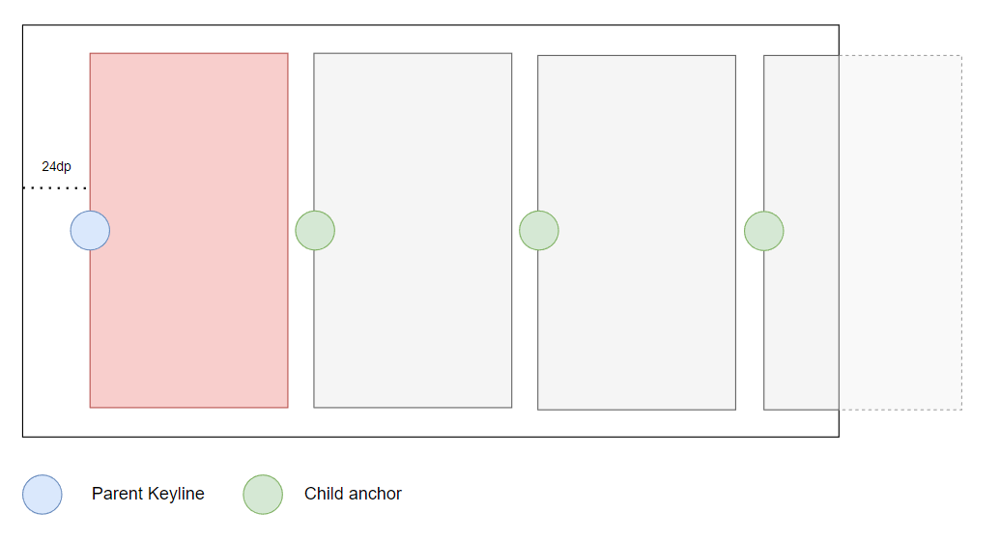

Alignment¶
This section is meant to be an overview to the concepts of ParentAlignment and ChildAlignment.
For more detailed examples, check this section.
Parent Alignment¶
The parent alignment is the first configuration required for aligning views in DpadRecyclerView.
This configuration will take care of calculating the anchor position for your ViewHolders.
Consider the following example for a vertical DpadRecyclerView:

The red circle is centered both horizontally and vertically and serves as the anchor for all ViewHolders.
To create this configuration, you would do the following:
You can also create a top anchor:

In this case, the configuration would be:
Both offset and fraction start counting from the minimum edge of the DpadRecyclerView. For horizontal orientations, this would be the start and for vertical orientation this would be the top.
Aligning to an edge¶
By default, the views at the minimum and maximum edges won't be aligned to the keyline position specified by ParentAlignment. If you want to change this behavior, you need to change the edge argument of ParentAlignment:
- To align every view:
ParentAlignment.Edge.NONE - To align every view except the ones at the minimum edge:
ParentAlignment.Edge.MIN - To align every view except the ones at the maximum edge:
ParentAlignment.Edge.MAX - To align every view except the ones at the minimum edge and maximum edge (default behavior):
ParentAlignment.Edge.MIN_MAX
Child Alignment¶
The ChildAlignment class will take care of calculating the anchor position for your ViewHolder views.
Consider the following example for a horizontal DpadRecyclerView:

The blue circle shows the keyline position defined by ParentAlignment and the green circles shows the anchor position of each child
defined by ChildAlignment.
In this case, the combined configuration would be:
Examples¶
For more detailed examples, check the recipes section.